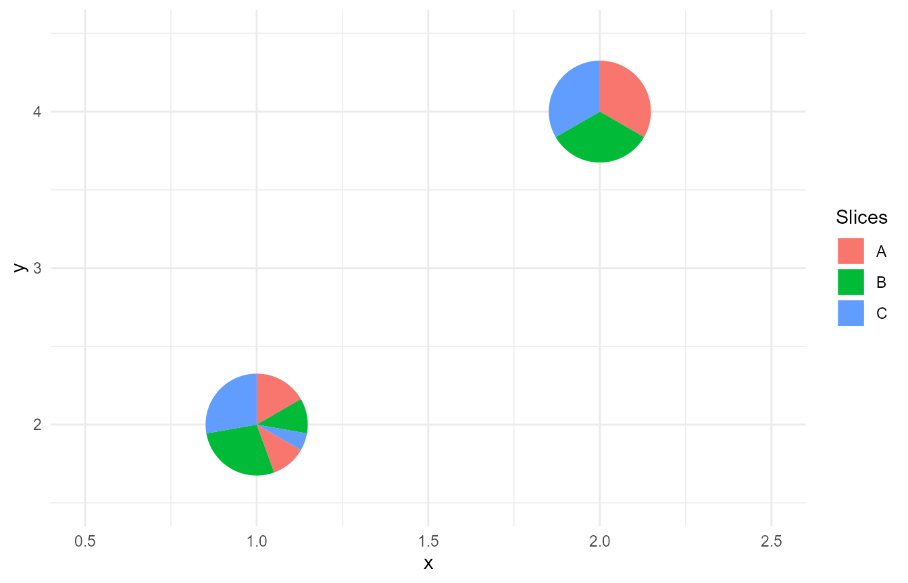
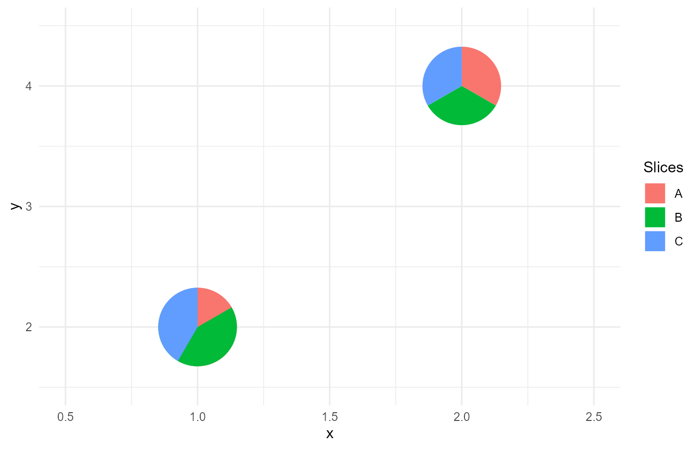

This vignette shows examples of potential unusual situations that can be
encountered when using the PieGlyph package and how they
are handled within the package.
Missing values for a particular attribute
When data is missing, it is common to see a missing value for a particular attribute in an observation.
plot_data <- data.frame(x = 1:4,
y = c(3,1,4,2),
A = c(5, 2, NA, 3),
B = c(NA, 2, 3, NA),
C = c(7, NA, NA, 3))
plot_data
#> x y A B C
#> 1 1 3 5 NA 7
#> 2 2 1 2 2 NA
#> 3 3 4 NA 3 NA
#> 4 4 2 3 NA 3
The package handles this situation be replacing the any NA values with 0
in the data. The user is notified about this with a warning. This
warning can be silenced by specifying na.rm = TRUE in
geom_pie_glyph.
ggplot()+
geom_pie_glyph(aes(x = x, y = y),
slices = c('A','B','C'),
data = plot_data,
radius = 1)+
theme_minimal()+
xlim(0.5,4.5)+
ylim(0.5,4.5)
#> Warning: There were observations with some slices being "NA", they have been replaced
#> with 0.
Missing values for all attributes
It is also possible that all attributes will be missing for an observation.
plot_data <- data.frame(x = 1:4,
y = c(3,1,4,2),
A = c(5, 2, NA, 1),
B = c(2, 2, NA, 5),
C = c(7, 3, NA, 3))
head(plot_data)
#> x y A B C
#> 1 1 3 5 2 7
#> 2 2 1 2 2 3
#> 3 3 4 NA NA NA
#> 4 4 2 1 5 3
The package handles this situation by dropping the observation that has
all attributes as missing. The user is notified about this by a warning.
This warning can be silenced by specifying na.rm = TRUE in
geom_pie_glyph.
ggplot(data = plot_data)+
geom_pie_glyph(aes(x = x, y = y),
slices = c('A','B','C'),
radius = 1)+
theme_minimal()+
xlim(0.5,4.5)+
ylim(0.5,4.5)
#> Warning: There were observations with all slices being "NA", these observations have
#> been removed from the data.
All attributes equal to zero
It is possible that for a particular observation all attributes will have a value of 0.
plot_data <- data.frame(x = 1:4,
y = c(3,1,4,2),
A = c(5, 2, 0, 1),
B = c(2, 2, 0, 5),
C = c(7, 3, 0, 3))
head(plot_data)
#> x y A B C
#> 1 1 3 5 2 7
#> 2 2 1 2 2 3
#> 3 3 4 0 0 0
#> 4 4 2 1 5 3
The package handles this situation by dropping the observation that has
all attributes equal to 0. The user is notified about this by a warning.
This warning can be silenced by specifying na.rm = TRUE in
geom_pie_glyph.
ggplot(data = plot_data)+
geom_pie_glyph(aes(x = x, y = y),
slices = c('A','B','C'),
radius = 1)+
theme_minimal()+
xlim(0.5,4.5)+
ylim(0.5,4.5)
#> Warning: There were observations with all slices being "0", they have been removed from
#> the data before plotting.
Negative values for attributes
Negative values don’t make sense in the context of pie-charts and are
not supported by the PieGlyph package. If a user tries to
use the package with data that includes negative values for attributes,
they will get an error message.
plot_data <- data.frame(x = 1:4,
y = c(3,1,4,2),
A = c(5, -2, 3, 3),
B = c(2, 2, 0, 0),
C = c(-7, 1, 3, -3))
plot_data
#> x y A B C
#> 1 1 3 5 2 -7
#> 2 2 1 -2 2 1
#> 3 3 4 3 0 3
#> 4 4 2 3 0 -3
ggplot()+
geom_pie_glyph(aes(x = x, y = y),
slices = c('A','B','C'),
data = plot_data)
#> Error in `geom_pie_glyph()`:
#> ! Problem while computing layer data.
#> ℹ Error occurred in the 1st layer.
#> Caused by error in `layer_data()`:
#> ! The categories C and A in `data` contains negative values. Remove them
#> before plotting.Identical x and y values for different pie-glyphs
If two or more pie-glyphs have identical values for the x and y coordinates, it can cause problems while creating the glyphs as the slices within each pie are grouped based on the x and y coordinates.
As an example, the plot generated for the following dataset should show two pie-glyphs (one for each system) showing the proportions of the three attributes. Although the two pie-glyphs would be overlapped over one another and only one would be visible.
dummy_data <- data.frame(system = rep(paste0('S', 1:3), each = 3),
x = c(1,1,1,1,1,1,2,2,2),
y = c(2,2,2,2,2,2,4,4,4),
attribute = rep(c('A','B','C'), times = 3),
value = c(30,20,10, 20,50,50, 10,10,10))
dummy_data
#> system x y attribute value
#> 1 S1 1 2 A 30
#> 2 S1 1 2 B 20
#> 3 S1 1 2 C 10
#> 4 S2 1 2 A 20
#> 5 S2 1 2 B 50
#> 6 S2 1 2 C 50
#> 7 S3 2 4 A 10
#> 8 S3 2 4 B 10
#> 9 S3 2 4 C 10The expected plot is as follows
ggplot(data = dummy_data[4:9,])+
geom_pie_glyph(aes(x = x, y = y),
slices = 'attribute', values = 'value',
radius = 1)+
theme_minimal()+
xlim(0.5, 2.5)+
ylim(1.5, 4.5)+
labs(title = 'Expected Plot')However the plot produced is different and the attributes between the two system get combined into a single pie-glyph.
ggplot(data = dummy_data)+
geom_pie_glyph(aes(x = x, y = y),
slices = 'attribute', values = 'value',
radius = 1)+
theme_minimal()+
xlim(0.5, 2.5)+
ylim(1.5, 4.5)+
labs(title = 'Generated Plot')As described before this is because the slices of the pie-glyph are grouped on the basis of the x and y coordinates of the pie-glyph and hence if two glyphs have the same x and y coordinates, their glyphs get combined together.
This problem arises only in situations when the data is presented in the long-format (attributes stacked in one column). The package warns the user if this issue arises.
ggplot(data = dummy_data)+
geom_pie_glyph(aes(x = x, y = y),
slices = 'attribute', values = 'value',
radius = 1)+
xlim(0.5, 2.5)+
ylim(1.5, 4.5)+
theme_minimal()
#> Warning: Some pie-glyphs have identical x and y coordinates. This can cause issues when
#> creating the glyphs.
#> ℹ Consider adding a pie_group variable to distinguish individual glyphs from
#> one another.
#> ℹ See `vignette("unusual-situations")` for more information.
The solution here is to manually specify the pie_group aesthetic which groups the attributes for one pie-glyph together
ggplot(data = dummy_data)+
geom_pie_glyph(aes(x = x, y = y, pie_group = system),
slices = 'attribute', values = 'value',
radius = 1)+
xlim(0.5, 2.5)+
ylim(1.5, 4.5)+
theme_minimal()However a grouping variable might not always be present in the data nor would it be easy to manually create one. Hence the easiest fix would be to simply convert the data into wide-format (unstack the attributes into separate columns) and let the package handle the grouping of the pie-glyphs.
dummy_data_wide <- dummy_data %>%
pivot_wider(names_from = 'attribute', values_from = 'value')
head(dummy_data_wide)
#> # A tibble: 3 × 6
#> system x y A B C
#> <chr> <dbl> <dbl> <dbl> <dbl> <dbl>
#> 1 S1 1 2 30 20 10
#> 2 S2 1 2 20 50 50
#> 3 S3 2 4 10 10 10
ggplot(data = dummy_data_wide)+
geom_pie_glyph(aes(x = x, y = y),
slices = c('A','B','C'),
radius = 1)+
xlim(0.5, 2.5)+
ylim(1.5, 4.5)+
theme_minimal()
Finally, we could jitter the pie-glyphs to view all the glyphs
ggplot(data = dummy_data_wide)+
geom_pie_glyph(aes(x = x, y = y),
slices = c('A','B','C'),
radius = 1,
position = position_jitter(seed = 333))+
ylim(1.4, 5)+
xlim(0.6, 2.2)+
theme_minimal()